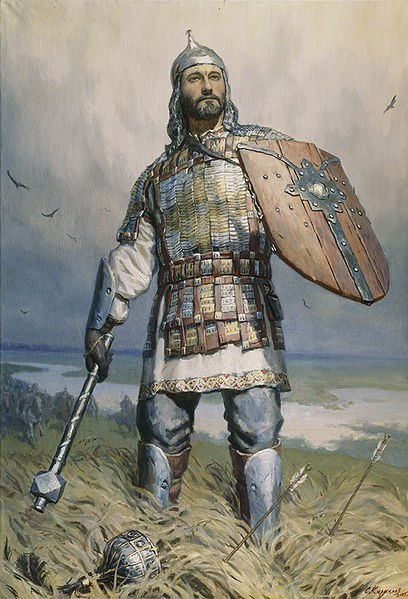

Снова вернемся на север, оставив Тохтамыша изумлять Тамерлана своими полководческими дарованиями. Как говорилось в выпуске первом, в 1376 году московские войска ловко уперли Волжскую Булгарию из-под носа у Орды. Этого Мамай уже вынести не мог, и временно забив на семейные межмонгольские разборки, обратил все свое внимание на совсем обнаглевших русских.

Первый привет от хан-продюсера дошел до наших земель в тот же год. Появившийся непонятно откуда таинственный субъект по имени Арапша во имя Мамая разорил малюсенькое Новосильское княжество (единственным известным в наше время городом этого княжества является Тула), но в битву с московским войском не полез – решил повременить.
На следующий год тот же неизвестный хмырь Арапша устроил форменный массаракш объединенному русскому войску в битве при реке Пьяне. Название реки, между прочим, говорящее, потому что наше войско проиграло именно из-за этого самого дела.
Сперва, конечно, все шло честь по чести: караулы высматривали врага, в войске царили дисциплина и порядок, воеводы командовали, солдаты выполняли – благодать! Но потом князю Дмитрию Ивановичу (это который все еще не Донской) надоело ходить кругами и ждать татар, и он уехал домой, оставив за главного мальчика Ивана, сына нижегородского князя. Чем был обусловлен столь интересный выбор заместителя, сказать сложно. Возможно Дима счел, что мальчонка уже зрел и опытен, раз годом ранее ходил на Булгарию, может, лицо понравилось, а может, подумал, что своя хата ближе к телу. Как-никак, татар войско искало именно в пределах нижегородского княжества.
Иванушка принял бразды командования, и вот тут-то и началось... Кто-то хитрый пустил слух, что монголы на самом деле ой как далеко, за тридевять земель, и можно расслабиться, заняться охотой, пьянством и легким развратом по деревням. Сперва Иван посомневался, но быстро бросил тревожиться и ударился во все тяжкие. Прочие воеводы не отставали – стыдно как-то отставать от молодого парня! Несколько офонаревшие от такого поворота событий рядовые бойцы почесали в лохматых затылках, переглянулись и незамедлительно откупорили разнообразные емкости с давно заготовленной бражкой.
Как говорится, конец был немного предсказуем.
В одно похмельное летнее утро на лагерь спящих вповалку русских налетели монголы, проведенные тайными тропами мордовскими князьями. Результат эдакого хеппенинга вполне понятен. Те из гибнущего войска, кто осилил сдать зачет по бегу, немедленно сталкивались с зачетом по плаванию – татары гнали русских к реке. Княжич Иван, как выяснилось, по этому предмету не успевал с детства.
Разнеся таким образом всю армию нижегородского княжества, загадочный товарищ Арапша вдоволь пограбил все княжество, включая сам Нижний Новгород, а на закуску, уже уходя домой, взял Рязань – просто чтобы практики не терять.
Обрадованная мордва, выждав, пока страшные монголы уйдут, сунулась было добить нижегородцев да прихватить, что осталось после Арапши, но ей повезло меньше. Выжившие после битвы таки остались, поэтому о личностях татарских проводников русским долго гадать не пришлось. Мордву встретили на подступах, изничтожили всю, после чего дошли уже до мордовских земель и устроили там милый маленький геноцваген. Так, душу отвести.
Мамай же, получив от Арапши известия о проявленной противником идиотии, испытал приступ радостного удивления и тут же засобирался в следующий поход – окончательно расставить все точки над «ё».
Дмитрий Иванович, поняв, что делегирование командования всяким недорослям до добра не доводит, решил встретить третий поход монголов самолично.
И в конце лета 1378 года сборная русских сыграла со сборной монголов матч-реванш. Как водится – рядом с рекой.
А вот счет вы узнаете в следующем выпуске.